Na vier weken lang kennis te hebben gemaakt met de verschillende topics binnen HCI, was het tijd voor de labweken. Twee volle weken intensief aan de slag met een partner om iets tofs te gaan bouwen. Samen met Jimmy Jansen van 't Land heb ik keihard gewerkt om uiteindelijk iets heel erg moois te maken: The Bamboo Soundbox! Lees vooral verder om te ontdekken hoe het proces was en hoe de soundbox er uit ziet!
Maandag 7 juni - dag 1
Vandaag was de eerste dag van de twee labweken. In de ochtend was een kick-off met alle studenten, waarna de groep werd gesplitst per gekozen thema. Hier kwam een korte uitleg over de labweken en wat er verwacht wordt. Tijdens de labweken werk ik samen met Jimmy Jansen van ’t Land. Samen hebben we gekozen voor het thema playful interactions.
Na de kick-off was het tijd om naar school te gaan. Hier hebben Jimmy en ik een begin gemaakt aan het project. We zijn begonnen met het zoeken van diverse technologieën. Al gauw merkten we dat we erg gewend zijn om te werken vanuit een probleem of idee, en daarbij een technologie of middel voor te bedenken, waardoor we het lastig vonden om het nu vanaf de andere kant te benaderen. Omdat we het gevoel hadden dat we een beetje vastliepen, besloten we in een paar boeken te bladeren die door de docenten neergelegd zijn. Dit bleek een goede keuze, want al gauw raakten we geïnspireerd door de afbeeldingen en voorbeelden in de boeken. Ik heb in mijn notitieboekje allerlei hersenspinsels opgeschreven die we hadden, zoals hieronder te zien is.
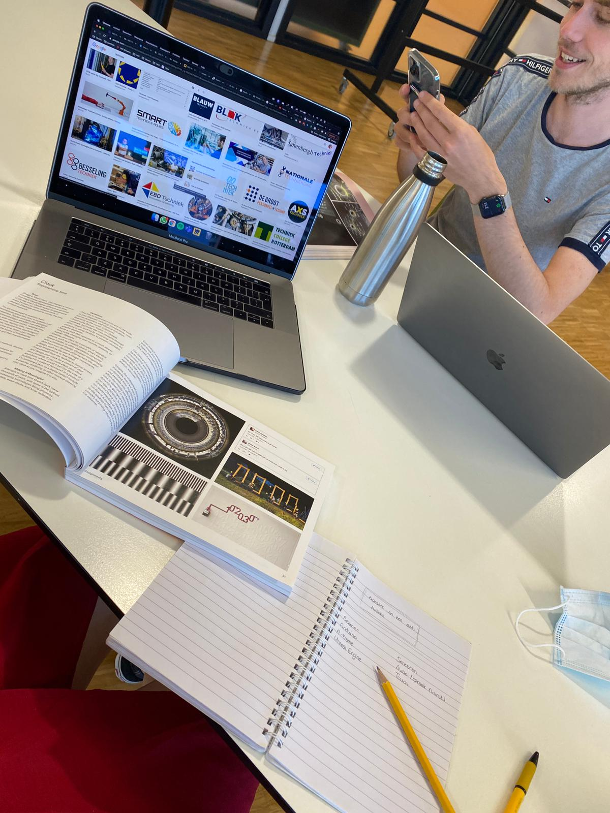
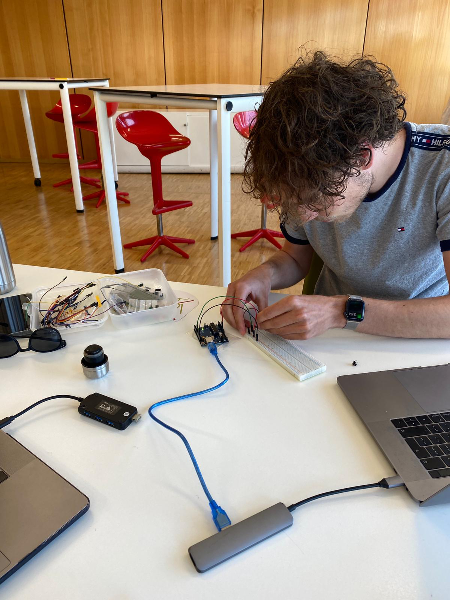
We hebben vervolgens onze Arduino kit erbij gepakt en zijn wat gaan experimenteren met mogelijkheden die de technologie biedt. We hebben geprobeerd om een geluidje af te spelen zodra we op een knopje drukken. Dat had wat voeten in de aarde, want de code was niet helemaal correct. Uiteindelijk hebben we dit werkend gekregen.
Vervolgens hebben we een persoonlijk Miro bord aangemaakt voor ons tweeën om onze ideeën en voortgang in te plaatsen. Daarna hebben we in het gezamenlijke Miro bord van het thema onze voortgang geüpdatet en zijn we daarna naar huis gegaan.
Disndag 8 juni - dag 2
De tweede dag van de labweken hebben we beide thuis doorgebracht, en hebben we door middel van een MS Teams call samen verder gewerkt aan het project. In de ochtend was er een korte kick-off waarna ik een hele boel inspiratie op internet heb verzameld en in het Miro bord heb gestopt.
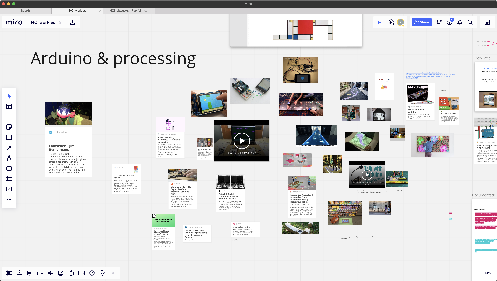
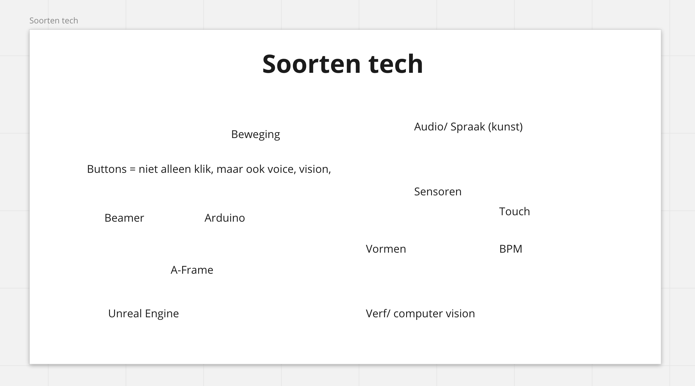
Daarna hebben we onze ideeën wat uitgebreid en een keuze gemaakt voor wat we willen proberen te maken. Het idee is dat we een muziekdeuntje koppelen aan letters, waarmee je kunt ontdekken wat voor geluid er bij je naam hoort. Hiervan hebben we veel voorbeelden opgezocht, en gekeken wat de mogelijkheden zijn met Arduino en Processing. Dit bleek mogelijk.
Na de lunchpauze hebben we een aantal digitale ideetjes uitgewerkt in Adobe XD. We waren al bezig met de stijl en vormgeving, maar realiseerden ons dat dit een van de laatste prioriteiten zou moeten zijn. Daarom hebben we een soort prioriteiten to do lijstje gemaakt in Miro, waarbij we steeds meer toe zullen werken naar een Hi-Fi resultaat.
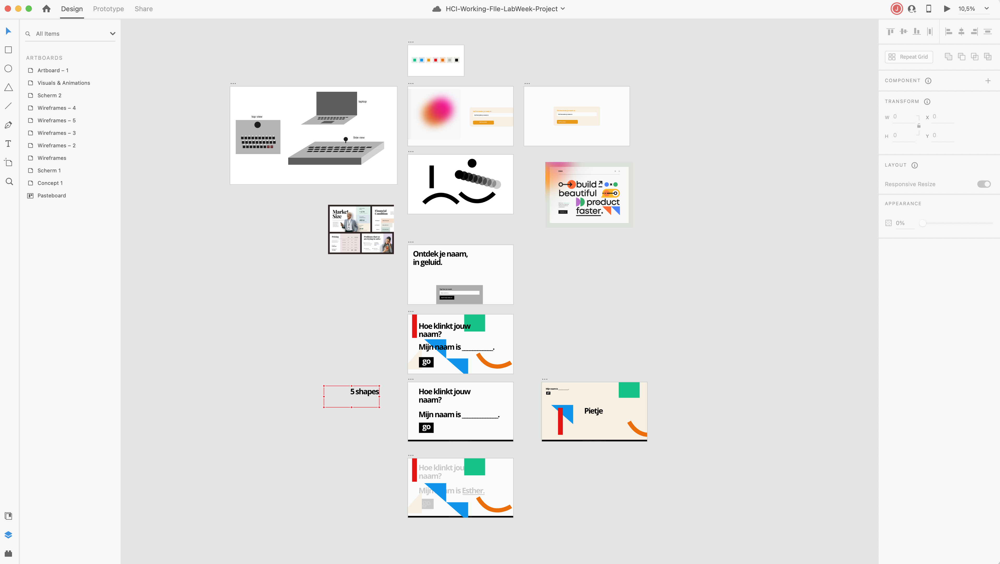
Tot slot hebben we in Miro weer gedocumenteerd wat we gedaan hebben. Morgen gaan we proberen fysiek op school te werken samen. Dat is toch net even wat makkelijker dan op afstand. Vandaag was het in ieder geval geen probleem.
Woensdag 9 juni - dag 3
Vandaag hebben Jimmy en ik op school doorgebracht. We hebben vandaag veel geprobeerd met arduino en aluminiumfolie. Die aluminiumfolie hebben we eerst gehaald bij de supermarkt voordat we aan de slag gingen. We wilden een soort piano maken, maar dan zonder geluid (vooralsnog). Het doel was om meerdere touch inputs te maken waarbij een ledlampje oplicht zodra deze wordt aangeraakt. Hier zijn we eigenlijk de hele dag mee bezig geweest.
Om te beginnen hebben we een van de laatste opdrachten van de Arduino opdrachten gemaakt. Het was uiteindelijk gelukt om een lampje te laten aangaan bij aanraking van een banaan. Het vervolgens doen met meerdere folies lukte steeds niet goed. We hebben twee keer de helpdesk online gevolgd om wat vragen te beantwoorden. We kwamen er namelijk achter dat we voor een toetsenbord 56 digital inputs op het Aruino bord nodig hebben, terwijl onze Arduino uno maar 14 heeft. Daarom hebben we nu een Arduino Mega besteld plus wat extra weerstandjes die nodig zijn.
We zijn de dag begonnen met een bakje koffie :) en het opzoeken van de mogelijkheden van het maken van een toetsenbord. Meerdere tutorials hebben we gevonden en verzameld in ons Miro bord. Vervolgens hebben we met veel code geëxperimenteerd. Uiteindelijk kregen we 1 folie knopje werkend. Dit zagen we terug in de serial monitor.
Uiteindelijk kregen we het voor elkaar om drie knoppen werkend te krijgen. Als je een van de knopjes aanraakte dan zag je dit in de serial monitor. Vervolgens wilden we dat het ledlampje dus voor alle drie zou branden. Dit kregen we niet voor elkaar. In de helpdesk konden Chris en Jorn ons een eind op weg helpen. Aan het einde van de dag hadden we het voor elkaar dat het lampje oplichtte bij aanraking van zo’n aluminiumfolie knopje. Het lampje wilde echter niet helder branden bij twee van de drie folies. Hier gaan we morgen mee verder.
Donderdag 10 juni - dag 4
We zijn vandaag bezig geweest met het werkend krijgen van de aluminiumknoppen en het ledlampje. Het was uiteindelijk vrij simpel om werkend te krijgen. Gisteren hadden we in de for-loop een fout gemaakt waardoor het lampje bleef knipperen bij het aanraken van een folietje. Dat hebben we nu opgelost door een if-else statement te gebruiken.
Nadat we drie buttons met het ledlampje hadden laten communiceren zijn we verdergegaan met ontdekken hoe we processing konden koppelen aan Arduino. We zagen dat er een verschil zit tussen processing en p5.js. We hebben de voor- en nadelen van de twee naast elkaar gelegd en besloten om het project verder te maken met p5.js.
Dat p5.js bleek nogal een uitdaging te zijn. Heel de tijd lukte het niet wat we wilden. Het koppelen van bibliotheken en p5.js aan Arduino was een grote uitdaging. We hebben dat uiteindelijk met enige help van docenten en via de helpdesk werkend gekregen. Toen pas begon het echte experimenteren met p5.js. Om p5.js beter te begrijpen hebben we een van de Arduino workshop nog een opdracht gemaakt. We hebben vervolgens de code uitgeplozen om te ontdekken wat iets betekent. Op die manier konden we zelf de code in stukjes opdelen en andere dingen proberen.
We wilden eerst een button maken die veranderde van kleur bij een muisklik. Dat werkte uiteindelijk, dus toen zijn we verdergegaan met het zorgen dat een melodietje afspeelt bij het klikken van een button. Dit was echt een gedoe en heeft bijna de rest van de dag gekost. In de middag hadden we weer een fysieke les, wat goed uitkwam. Hier konden we wat dingen vragen aan docenten. Eerst hebben we veel tutorials gevolgd en filmpjes gekeken. Uiteindelijk is het (o.a. met hulp van docent Tim) voor elkaar gekregen: zodra je een knopje ingedrukt houdt speelt een melodietje. Laat je de knop los, dan stopt de melodie weer.
We zijn tot daar gekomen vandaag, en zullen morgen hopelijk ook aan de slag kunnen met de Arduino Mega. Dan kunnen we de letters uitbreiden. Tim zei dat je bij IPO kunt vragen of ze snel iets tofs voor je kunnen laseren, dus misschien laten we een houten(?) toetsenbordje laseren en de letters ook. Dan ziet het eindontwerp er dadelijk supervet uit. Maar dat is allemaal voor later. Eerst maar eens zorgen dat het eindproduct werkt in de korte tijd die we nog hebben. Morgen weer een dag :)
Vrijdag 11 juni - dag 5
Gisterenavond is onze bestelling van TinyTronics binnengekomen. De Arduino Mega en de weerstandjes kunnen we gelijk goed gebruiken. We hebben onze setup van Arduino Uno overgezet naar de Mega en uitgebreid tot een buttonaantal van 19. Vervolgens hebben we gewerkt aan het werkend krijgen van een stukje p5.js zonder Arduino. Dus als je een van de touchsensors aanraakt, dan speelt een geluidje en verandert de achtergrond. Op deze manier kunnen we p5.js alvast wat beter begrijpen voordat we het aan onze Arduino setup gaan koppelen.
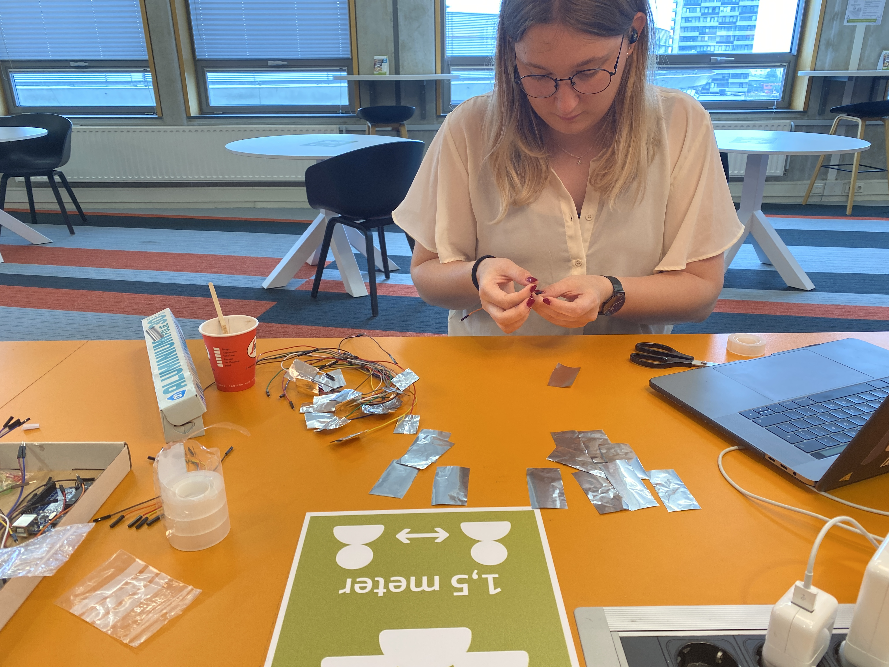
We hebben vervolgens een geruime tijd besteed aan het werkend krijgen van die 19 buttons. Na de eerste drie lukte het niet met de rest. Uiteindelijk bleek het dat we een aantal waardes hadden omgedraaid. De code was in de basis dus goed, maar we hadden het niet helemaal goed. Hierna werkte het wel en hebben we bij het aanraken van de 19 buttons een lampje dat gaat branden.
De rest van de middag zijn we druk bezig geweest met het connecten van Arduino met p5.js. Dit blijkt veel ingewikkelder dan gedacht. We hadden een aantal tutorials gevonden online, maar die kregen we niet werkend. Omdat het al het einde van de dag is, hebben we besloten dit na het weekend weer op te pakken en eerst een pizza te gaan eten in de stad :)
Maandag 14 juni - dag 6
Vandaag hebben Jimmy en ik verder gewerkt aan waar we vrijdag mee vastliepen. We hebben een groot deel van de ochtend gespendeerd aan het koppelen van p5.js aan Arduino. Om 1 uur in de middag konden we in de helpdesk met Paul kijken naar het probleem. Na 45 minuten bleek echter toch dat we beter processing konden gebruiken. Eigenlijk baalden we hier vooral van, omdat we al veel tijd in p5.js hadden gestopt en dit niet meteen wilden loslaten. We besloten om nog even door te gaan tot de les begon in de middag, en als het dan niet lukte over te stappen op processing.
In de middag hebben we in de les het alsnog vrij snel werkend gekregen. We waren er al heel dichtbij, maar met een beetje hulp van Silvain was het zo gepiept. Hierna konden we verder werken aan onze soundlibrary. Aan elk draadje koppelden we een geluidje en een achtergrondkleur wijziging. Zodra je dan op 1 van de draadjes tikt speelt een liedje en verandert de achtergrond mee. Dit was stap 1.
Hierna hebben we een naam bedacht voor ons idee: Organic Sound Experience. Het originele idee wat we hadden, waarbij je een melodie kon horen bij je naam, bleek vrij ingewikkeld. We hebben daarom het idee iets aangepast, zodat het een soort muziek launchpad wordt met leuke animatie visuals erbij. Dat is waar we morgen aan verder gaan werken.
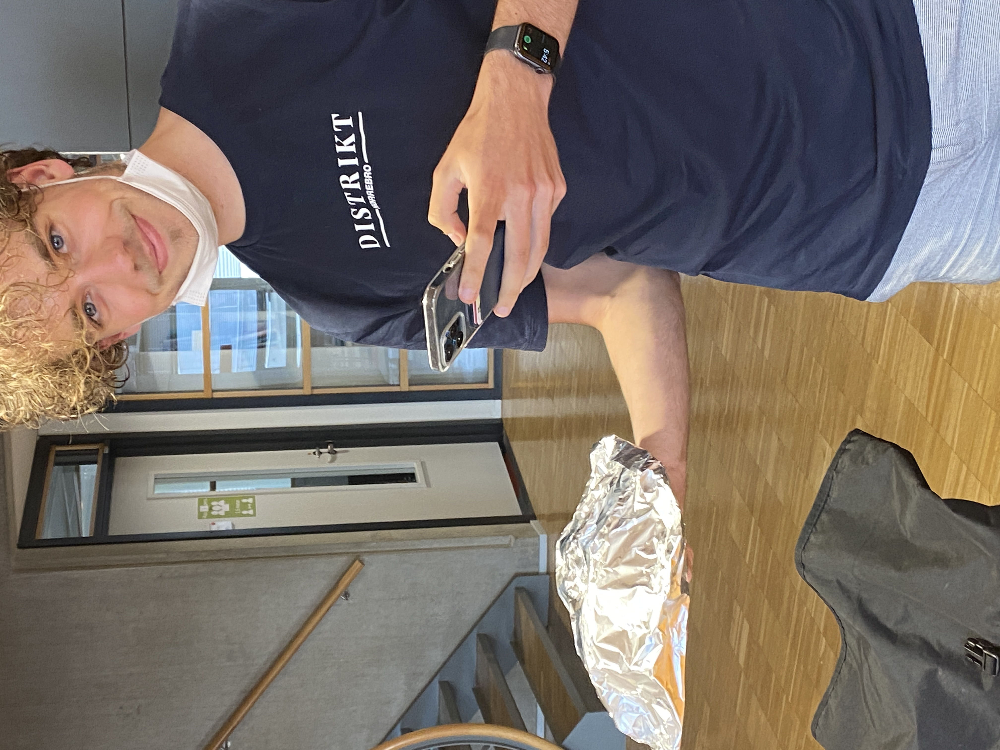
Nee dit is geen bom, ook geen kapsalon.. :)
Dinsdag 15 juni - dag 7
We zijn vandaag verdergegaan met waar we gisteren gebleven waren. De soundbox. Jimmy heeft zich verder gefocust op de code, en ik hield me bezig met het uiterlijk. Ik heb in Adobe XD een schematische weergave getekend van een doosje die we zelf konden maken. Ook heb ik maten uitgerekend. Aan het einde van de dag zijn we samen naar de bouwmarkt gegaan om een plaat hout te halen. Uiteindelijk besloten we deze achter te laten bij de bouwmarkt en morgenochtend op te halen, ook omdat we twijfelden of zelf maken wel de oplossing is. Het kost namelijk erg veel tijd en zo heel veel tijd hebben we niet meer.
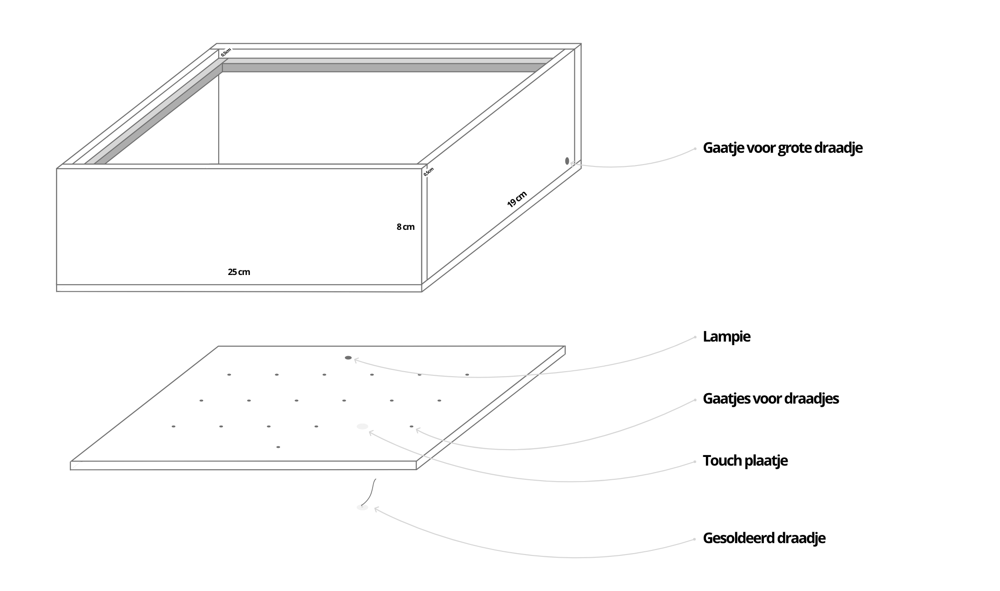
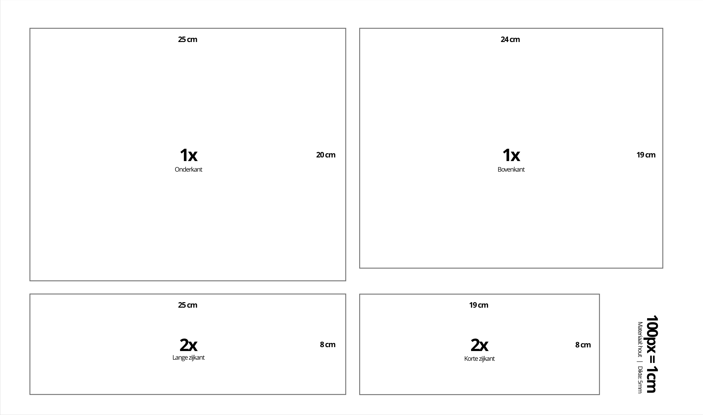
Woensdag 16 juni - dag 8
Nog 2 dagen tot de Expo! In de ochtend zijn Jimmy en ik langs de winkels gegaan, op zoek naar een doos. We wilden deze eerst zelf maken, maar dat leek ons te tijdrovend. We vonden bij de Blokker een mooie theedoos. Ik heb daar op school gaatjes in geboord voor de jumpwires.
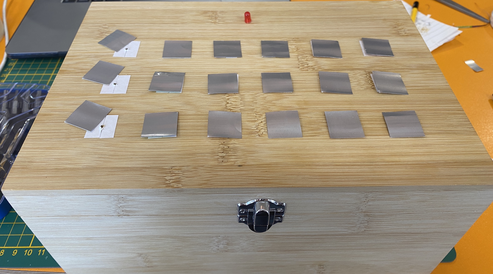
Die wires stripten we dan deels en met dubbelzijdig tape plakten we die vast. We hadden het eerder al geprobeerd met aluminiumfolie en dat werkte. Aluminiumfolie is echter wel vrij gevoelig voor kreukels en dus had ik lege frisdrank blikjes meegenomen. Deze had ik in vierkantjes gesneden en opgeplakt. Het werkte wel, maar niet echt goed. Morgen nog eens over nadenken…
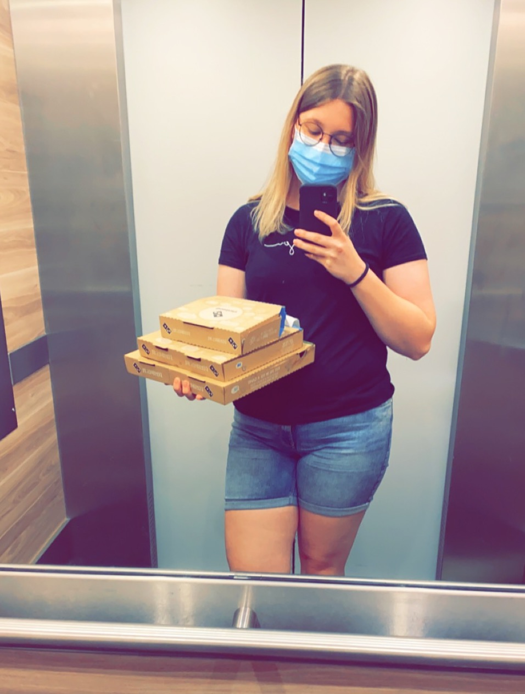
Donderdag 17 juni - dag 9
De laatste dag om te werken aan het project… En we hebben het product afgekregen! Jimmy heeft vandaag de animaties afgerond in Javascript, terwijl ik me verder bezighield met het finetunen van de looks van de box. Omdat de blikjes toch niet goed geleiden (want een plastic laagje zit er nog omheen blijkbaar), heb ik het vervangen met aluminiumfolie. Ik heb vandaag veel papiertjes gesneden, geknipt en geplakt. Ook wilden we een lampje aan de box vastlijmen. We probeerden secondelijm, maar het enige wat vast bleef plakken waren onze vingers... Oeps! Uiteindelijk het lampje met dubbelzijdig tape en isolatietape vastgekregen.
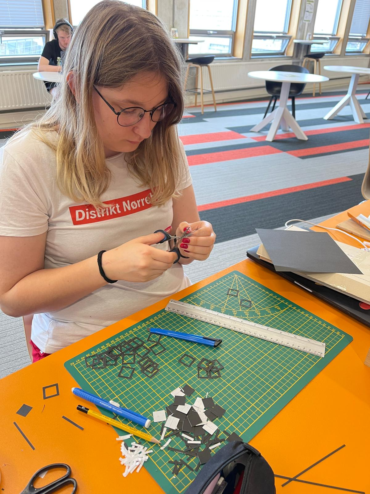
We hebben tot laat in de avond op school doorgewerkt. Samen hebben we een script uitgeschreven voor de video die we op wilden nemen. Die video shots hebben we vervolgens ook opgenomen. Ook hebben we de naam van het project geüpdate: the bamboo soundbox. Morgenvroeg gaan we samen de video editen, inspreken en dan is alles klaar voor de expo!
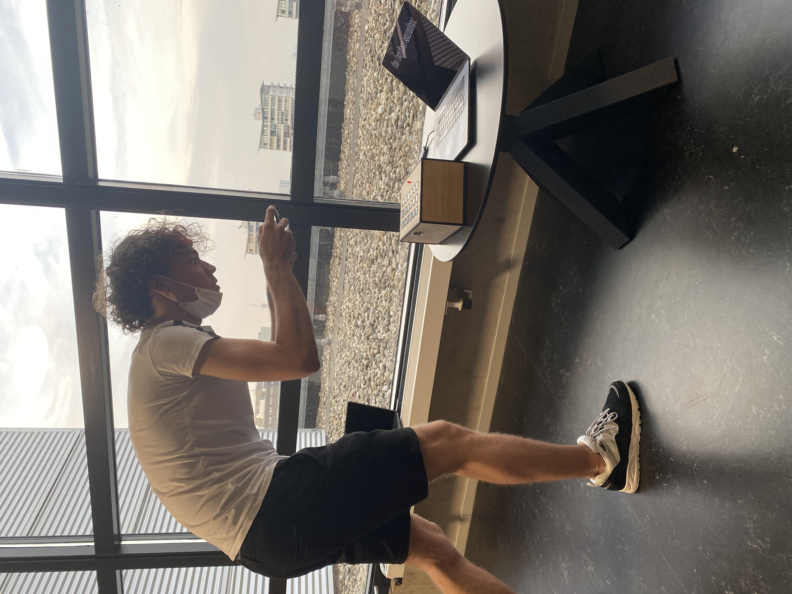
Vrijdag 18 juni - dag 10
Expo dag! In de vroege ochtend zijn Jimmy en ik nog hard aan de slag gegaan om het eindproduct op te kunnen leveren. We hebben de voice-over opgenomen, de video ge-edit en geüpload op YouTube.
Om 11 uur was de pre-expo. Hier lieten we in kleine groepjes het product zien. Vervolgens werd er gezamenlijk gekozen voor het mooiste of meest originele project. Ons project is hieruit niet gekozen, waardoor we na de pre-expo vooral zelf konden kijken naar wat andere studenten gemaakt hebben tijdens de labweken.
Reflectie
Ik vond het vak echt zo veel meer meevallen dan ik had verwacht! De expo was nog steeds intensief, maar samenwerken met Jimmy was heel erg relaxed en ik ben dan ook enorm trots op wat we hebben neergezet in twee weken tijd! :)
Tijdens de labweken is mijn kennis van diverse technologieen en softwareprogramma's verbreed en uitgebreid. Ik heb na de labweken veel meer kennis van de mogelijkheden met Arduino, processing, p5.js en zelfs anime.js. Tijdens de workshops had ik al heel kort kennis gemaakt met p5.js, maar met de labweken heb ik dat samen met Jimmy veelvuldig gebruikt.
De labweken waren niet alleen maar koek & ei (of nouja, banaan & pizza dan..). We liepen over het algemeen goed op schema, alleen was het programmeren soms een uitdaging. Steeds zaten we er wel heel dichtbij en wist een docent, of onze eigen probeersels, ons dan weer op de juiste weg te helpen.
Als je nieuwsgierig bent naar het eindresultaat, bekijk dan hieronder de showcase video van The Bamboo Soundbox, die ik met trots wil laten zien!


 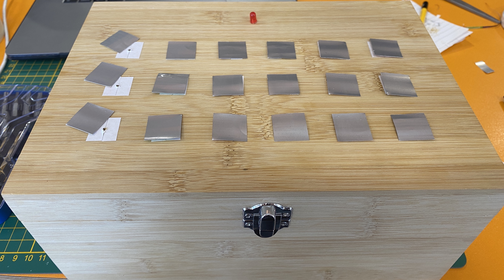
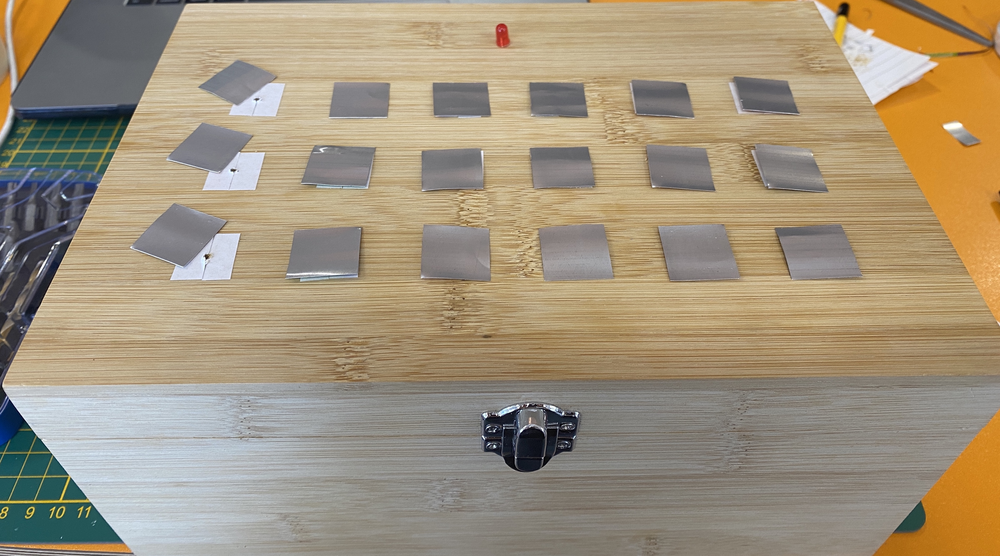